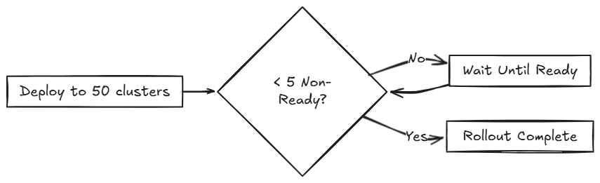

Rollout-Strategie
SUSE® Rancher Prime Continuous Delivery verwendet eine Rollout-Strategie, um zu steuern, wie Apps über Cluster bereitgestellt werden. Sie können die Reihenfolge und Gruppierung der Clusterbereitstellungen mithilfe von Partitionen definieren, um kontrollierte Rollouts und sicherere Updates zu ermöglichen.
SUSE® Rancher Prime Continuous Delivery bewertet den Ready Status jedes BundleDeployment, um zu bestimmen, wann mit der nächsten Partition fortgefahren werden kann. Für weitere Informationen siehe Statusfelder.
Während eines Rollouts zeigt der GitRepo-Status den Fortschritt der Implementierung an. Dies hilft Ihnen zu verstehen, wann Bundles Ready werden, bevor Sie fortfahren:
-
Für erste Bereitstellungen:
-
Einer oder mehrere Cluster können sich in einem
NotReadyZustand befinden. -
Die verbleibenden Cluster sind als
Pendingmarkiert, was bedeutet, dass die Implementierung noch nicht begonnen hat. -
Für Rollouts:
-
Einer oder mehrere Cluster können sich in einem
NotReadyZustand befinden. -
Die verbleibenden Cluster sind als
OutOfSyncmarkiert, bis die Implementierung fortgesetzt wird.
Die Rollout-Konfigurationsoptionen sind im rolloutStrategy Feld der fleet.yaml dokumentiert.
|
Wenn |
Wie funktioniert die Partitionierung?
Partitionen werden ausschließlich zur Gruppierung und Steuerung des Rollouts von BundleDeployments über Cluster verwendet. Sie beeinflussen die Implementierungsoptionen in keiner Weise.
Wenn die angestrebten Cluster nicht Teil der manuellen Partitionierung sind, werden sie nicht in die Implementierung einbezogen. Wenn ein Cluster Teil einer Partition ist, erhält es ein BundleDeployment, wenn die Partition verarbeitet wird.
Partitionen werden als NotReady betrachtet, wenn sie Cluster haben, die die zulässige Anzahl von NotReady Clustern überschreiten. Wenn ein Cluster offline ist, wird der gezielte Cluster nicht als Ready betrachtet und bleibt im NotReady Zustand, bis er wieder online ist und das BundleDeployment erfolgreich implementiert.
Der Schwellenwert wird bestimmt durch:
-
Manuelle Partitionen: Verwenden Sie den
maxUnavailableWert innerhalb jeder Partition, um die Bereitschaft für diese Partition zu steuern, andernfalls, wenn nicht angegeben, wirdrolloutStrategy.maxUnavailableverwendet. -
Automatische Partitionen: Verwenden Sie den
rolloutStrategy.maxUnavailableWert, um zu steuern, wann eine Partition bereit ist.
SUSE® Rancher Prime Continuous Delivery fährt nur fort, wenn die Anzahl der NotReady Partitionen unter maxUnavailablePartitions bleibt.
|
SUSE® Rancher Prime Continuous Delivery führt Implementierungen in Chargen von bis zu
|
Das folgende Diagramm zeigt, wie SUSE® Rancher Prime Continuous Delivery das Rollout behandelt:

Verschiedene Limits, die in SUSE® Rancher Prime Continuous Delivery konfiguriert werden können:
| Feld | Beschreibung | Standard |
|---|---|---|
maxUnavailable |
Maximale Anzahl oder Prozentsatz von Clustern, die |
100 % |
maxUnavailablePartitions |
Anzahl oder Prozentsatz der Partitionen, die gleichzeitig |
0 |
autoPartitionSize |
Anzahl oder Prozentsatz der Cluster pro automatisch erstellter Partition. |
25 % |
autoPartitionThreshold |
Mindestanzahl an Clustern, die erforderlich ist, bevor das automatische Partitionieren aktiviert wird. Unterhalb dieses Schwellenwerts werden alle Cluster in einer einzigen Partition platziert. |
200 |
maxNew |
Maximale Anzahl von |
50 |
Partitionen |
Definieren Sie manuelle Partitionen anhand von Cluster-Labels oder Gruppen. Wenn gesetzt, wird autoPartitionSize ignoriert. |
– |
SUSE® Rancher Prime Continuous Delivery unterstützt automatische und manuelle Partitionierung. Für weitere Informationen zu Konfigurationsoptionen verweisen Sie auf die rolloutStrategy Option im fleet.yaml-Referenz.
Automatische Partitionierung: SUSE® Rancher Prime Continuous Delivery erstellt automatisch Partitionen mit autoPartitionSize.
Wenn Sie beispielsweise 200 Cluster haben und autoPartitionSize auf 25 % setzen, erstellt SUSE® Rancher Prime Continuous Delivery vier Partitionen mit jeweils 50 Clustern. Der Rollout erfolgt in 50-Cluster-Batches und überprüft maxUnavailable, bevor er fortfährt.
Die Einstellung autoPartitionThreshold steuert, wann das automatische Partitionieren aktiviert ist:
-
Unterhalb des Schwellenwerts: Alle Cluster werden in einer einzigen Partition platziert, unabhängig von der Einstellung
autoPartitionSize. Dies verhindert unnötiges Partitionieren bei kleinen Bereitstellungen. -
Bei oder über dem Schwellenwert: SUSE® Rancher Prime Continuous Delivery erstellt mehrere Partitionen basierend auf
autoPartitionSize. -
Anpassbarer Schwellenwert: Sie können das Limit senken, um die Partitionierung mit weniger Clustern zu ermöglichen (z. B. auf 50 für Tests im kleinen Maßstab) oder es erhöhen, um die Partitionierung zu vermeiden, bis Sie eine große Anzahl von Clustern haben (z. B. auf 500 setzen).
-
Automatische Partitionierung deaktivieren: Setzen Sie es auf 0, um alle Cluster unabhängig von der Anzahl in eine einzige Partition zu zwingen.
Beispiel:
rolloutStrategy:
autoPartitionThreshold: 50 # Enable partitioning with only 50 clusters
autoPartitionSize: 50% # Create partitions of 50% each
[source,text]Mit 50 Clustern entstehen 2 Partitionen mit jeweils 25 Clustern. Ohne die Einstellung von autoPartitionThreshold wären diese 50 Cluster in einer einzigen Partition (da das Standardlimit 200 beträgt).
Manuelle Partitionierung: Sie definieren spezifische Partitionen mit der Option partitions. Dies bietet Kontrolle über die Auswahl der Cluster und die Reihenfolge des Rollouts.
|
Wenn Sie Partitionen manuell angeben, wird |
Zum Beispiel, betrachten Sie:
rolloutStrategy:
partitions:
- name: demoRollout
maxUnavailable: 10%
clusterSelector:
matchLabels:
env: staging
- name: stable
maxUnavailable: 5%
clusterSelector:
matchLabels:
env: prod
[source,text]SUSE® Rancher Prime Continuous Delivery dann:
-
Wählt Cluster basierend auf
clusterSelector,clusterGroupoderclusterGroupSelectoraus.-
Partitionen können durch
clusterName,clusterSelector,clusterGroupundclusterGroupSelectorangegeben werden.
-
-
Startet den Rollout zur ersten Partition.
-
Wartet, bis die Partition als
Readybetrachtet wird (abhängig vommaxUnavailableSchwellenwert). -
Fährt mit der nächsten Partition fort.
Das folgende Diagramm veranschaulicht, wie SUSE® Rancher Prime Continuous Delivery den Rollout über mehrere Partitionen handhabt, einschließlich Bereitschaftsprüfungen und Bereitstellungsfluss:

|
|
Innerhalb jeder Partition rollt SUSE® Rancher Prime Continuous Delivery bis zu maxNew BundleDeployments gleichzeitig aus (Standard: 50). Das Diagramm unten zeigt, wie SUSE® Rancher Prime Continuous Delivery bestimmt, ob während dieses Prozesses fortgefahren oder gewartet werden soll:

|
SUSE® Rancher Prime Continuous Delivery empfiehlt, Cluster zu kennzeichnen, damit Sie diese Labels verwenden können, um Cluster bestimmten Partitionen zuzuordnen. |
|
SUSE® Rancher Prime Continuous Delivery verarbeitet Partitionen in der Reihenfolge, in der sie in der |
Einzelne Partition
Wenn Sie rolloutStrategy.partitions nicht definieren, erstellt SUSE® Rancher Prime Continuous Delivery Partitionen automatisch basierend auf der Anzahl der angestrebten Cluster:
-
Für weniger als
autoPartitionThresholdCluster (Standard 200) verwendet SUSE® Rancher Prime Continuous Delivery eine einzelne Partition. -
Für
autoPartitionThresholdoder mehr Cluster verwendet SUSE® Rancher Prime Continuous Delivery den WertautoPartitionSize(Standard 25%), um Partitionen zu erstellen.
Zum Beispiel, mit 200 Clustern (entsprechend dem Standard autoPartitionThreshold), verwendet SUSE® Rancher Prime Continuous Delivery den Standardwert autoPartitionSize von 25%. Das bedeutet, dass SUSE® Rancher Prime Continuous Delivery 4 Partitionen erstellt (25% von 200 = 50 Cluster pro Partition). SUSE® Rancher Prime Continuous Delivery verarbeitet bis zu 50 Cluster gleichzeitig, was bedeutet, dass es:
-
Auf die ersten 50 Cluster ausrollt.
-
Die Bereitschaft basierend auf
maxUnavailablebewertet.-
Wenn die Bedingung erfüllt ist, fahren Sie mit den nächsten 50 fort, und so weiter.
-
Mehrere Partitionen
Wenn Sie mehrere Partitionen definieren, verwendet SUSE® Rancher Prime Continuous Delivery maxUnavailablePartitions, um zu begrenzen, wie viele Partitionen gleichzeitig NotReady sein können. Wenn die Anzahl der NotReady Partitionen maxUnavailablePartitions überschreitet, pausiert SUSE® Rancher Prime Continuous Delivery den Rollout.
Verhindern von Bildabrufstürmen
Während des Rollouts zieht jeder Downstream-Cluster Container-Images ab. Wenn Hunderte von Clustern gleichzeitig Container abrufen, kann dies das Repository überwältigen und sich wie ein DDoS-Angriff verhalten.
Um dies zu vermeiden, kann SUSE® Rancher Prime Continuous Delivery steuern, wie viele Cluster gleichzeitig aktualisiert werden. Sie können die folgenden Rollout-Konfigurationsoptionen verwenden, um den Rollout zu verlangsamen und zu staffeln:
-
autoPartitionSize -
partitions -
maxUnavailable
SUSE® Rancher Prime Continuous Delivery fügt während des Rollouts keine künstlichen Verzögerungen hinzu. Stattdessen erfolgt der Fortschritt basierend auf dem readiness Status der Arbeitslasten in jedem Cluster. Faktoren, die die Einsatzbereitschaft beeinflussen, sind die Bildabrufzeit, die Startzeit und die Einsatzbereitskeitsprüfungen. Obwohl die Verwendung von Einsatzbereitskeitsprüfungen empfohlen wird, sind sie nicht strikt erforderlich, um die Rollout-Geschwindigkeit zu steuern.
Wenn Sie beispielsweise 200 Cluster haben, die manuell partitioniert sind, jeweils mit 40 Clustern, und Sie einen Bildabrufsturm verhindern möchten:
-
maxUnavailablePartitions: Setzen Sie auf 0. -
maxUnavailable: Setzen Sie auf 10%.
So verläuft der Rollout:
-
SUSE® Rancher Prime Continuous Delivery beginnt mit der ersten Partition (40 Cluster).
-
Es werden bis zu 50
BundleDeploymentsgleichzeitig bereitgestellt. Es wird also in einem Batch an alle 40 Cluster in der Partition bereitgestellt. -
SUSE® Rancher Prime Continuous Delivery überprüft die Einsatzbereitschaft der Cluster in der Partition.
-
Wenn mehr als 4 Cluster nicht bereit sind, wird die Partition als
NotReadybetrachtet und der Rollout wird pausiert. -
Sobald ≤4 Cluster
NotReadysind, fährt SUSE® Rancher Prime Continuous Delivery mit der Implementierung fort.
-
-
Wenn die gesamte Partition größtenteils bereit ist (90%), wechselt SUSE® Rancher Prime Continuous Delivery zur nächsten Partition.
Wenn Sie weniger als 40 Implementierungen gleichzeitig verarbeiten möchten oder müssen, können Sie weniger Cluster in jede Partition einfügen.
Anwendungsfälle und Verhalten
Wenn die Anzahl der Cluster sich nicht gleichmäßig teilt, rundet SUSE® Rancher Prime Continuous Delivery die Partitionsgrößen ab. Zum Beispiel führen 230 Cluster mit autoPartitionSize: 25% zu:
-
Vier Partitionen von 57 Clustern
-
Eine Partition von 2 Clustern
Szenario: 50 Cluster (Einzelpartition)
rolloutStrategy:
maxUnavailable: 10%
[source,text]-
SUSE® Rancher Prime Continuous Delivery erstellt eine Partition, die alle 50 Cluster enthält, da keine Partitionen definiert sind.
-
Es besteht keine Notwendigkeit,
maxUnavailablePartitionsanzugeben, da nur eine Partition erstellt wird. -
Obwohl keine manuelle Partition angegeben ist und
maxUnavailableauf 10% gesetzt ist, wird SUSE® Rancher Prime Continuous Delivery gleichzeitig auf alle 50 Cluster bereitgestellt (das Batch-Verhalten überschreibt zunächstmaxUnavailable). -
Die Bewertung erfolgt, nachdem alle Bereitstellungen erstellt wurden.
Das folgende Diagramm veranschaulicht, wie SUSE® Rancher Prime Continuous Delivery 50 Cluster in einer einzigen Partition behandelt:

Szenario: 100 Cluster (Einzelpartition)
rolloutStrategy:
maxUnavailable: 10%
[source,text]-
SUSE® Rancher Prime Continuous Delivery erstellt eine Partition, die alle 100 Cluster enthält, da keine Partitionen definiert sind.
-
Es besteht keine Notwendigkeit,
maxUnavailablePartitionsanzugeben, da Sie nur eine haben. -
Obwohl keine manuelle Partition angegeben ist und
maxUnavailableauf 10% gesetzt ist, wird SUSE® Rancher Prime Continuous Delivery gleichzeitig auf 50 Cluster bereitgestellt (das Batch-Verhalten überschreibt zunächstmaxUnavailable).
Wenn 10 Cluster (10% von 100 Clustern) nicht verfügbar sind, wird die Implementierung der verbleibenden 50 Cluster pausiert, bis weniger als 10 Cluster NotReady sind.
Szenario: 200 Cluster (Mehrere Partitionen)
rolloutStrategy:
maxUnavailablePartitions: 1
autoPartitionSize: 10%
[source,text]-
SUSE® Rancher Prime Continuous Delivery erstellt 10 Partitionen, jede mit 20 Clustern.
-
Die Bereitstellung erfolgt sequenziell nach Partition.
-
Wenn zwei oder mehr Partitionen
NotReadywerden, pausiert der Rollout. -
Wenn eine Partition
NotReadyist, kann der Rollout zur nächsten fortfahren.
SUSE® Rancher Prime Continuous Delivery erstellt BundleDeployments für 20 Cluster, wartet darauf, dass sie Ready werden, und fährt dann mit dem nächsten fort. Dies begrenzt effektiv die Anzahl der Bildabrufe von Downstream-Clustern auf bis zu ~40 Bilder gleichzeitig.
Szenario: 200 Cluster (Strikte Bereitschaft, Manuelle Partitionen)
Manuelle Partitionierung ermöglicht Ihnen die Kontrolle über die Clustergruppierung mit maxUnavailablePartitions: 0.
rolloutStrategy:
maxUnavailable: 0
maxUnavailablePartitions: 0
partitions:
- name: demoRollout
clusterSelector:
matchLabels:
stage: demoRollout
- name: stable
clusterSelector:
matchLabels:
stage: stable
[source,text]-
Sie definieren manuelle Partitionen mit
clusterSelectorund Labels wiestage: demoRolloutundstage: stable. -
SUSE® Rancher Prime Continuous Delivery erstellt
BundleDeploymentsfür Cluster in der ersten Partition (zum BeispieldemoRollout). -
Der Rollout erfolgt strikt der Reihenfolge nach, SUSE® Rancher Prime Continuous Delivery wechselt nur zur nächsten Partition, wenn die aktuelle als bereit angesehen wird.
-
Mit
maxUnavailable: 0undmaxUnavailablePartitions: 0pausiert SUSE® Rancher Prime Continuous Delivery den Rollout, wenn eine Partition nicht als bereit angesehen wird.
Das folgende Diagramm beschreibt, wie SUSE® Rancher Prime Continuous Delivery entscheidet, ob der Rollout fortgesetzt oder pausiert werden soll.

Dies gewährleistet volle Bereitschaft und gestaffelten Rollout über alle 200 Cluster. Verwenden Sie diesen Ansatz, wenn Sie eine präzise Rollout-Sequenzierung und volle Clusterbereitschaft vor dem Fortschreiten benötigen.
Rollout-Strategie-Standardeinstellungen
Wenn die Rollout-Werte auf Partitionsebene nicht definiert sind, wendet SUSE® Rancher Prime Continuous Delivery die globalen Werte aus rolloutStrategy in fleet.yaml an. Partitionsspezifische Einstellungen überschreiben globale Werte, wenn sie ausdrücklich festgelegt sind.
Standardmäßig setzt SUSE® Rancher Prime Continuous Delivery:
-
maxUnavailableauf100%: Alle Cluster in einer Partition könnenNotReadysein und dennoch als bereit angesehen werden. -
maxUnavailablePartitionsauf0: Verhindert den Rollout nur, wenn eine oder mehrere Partitionen alsNotReadyangesehen werden. Diese Überprüfung ist jedoch ineffektiv, wenn alle Partitionen aufgrund vonmaxUnavailable: 100%bereit erscheinen.
Betrachten Sie beispielsweise 200 Cluster mit den Standardeinstellungen:
-
SUSE® Rancher Prime Continuous Delivery erstellt 4 Partitionen mit jeweils 50 Clustern (
autoPartitionSize: 25%). -
Da
maxUnavailable100%ist, wird jede Partition sofort alsReadybehandelt. -
SUSE® Rancher Prime Continuous Delivery durchläuft alle Partitionen, unabhängig von der tatsächlichen Bereitschaft.
SUSE® Rancher Prime Continuous Delivery empfiehlt Ihnen, Rollouts durch folgende Einstellungen zu steuern:
-
Niedriger
maxUnavailable, z.B. 10%. -
Setzen Sie
maxUnavailablePartitionsauf 0 oder höher, wenn gewünscht.
Dies stellt sicher:
-
Partitionen erfüllen die Bereitschaft, bevor der Rollout fortgesetzt wird.
-
SUSE® Rancher Prime Continuous Delivery pausiert den Rollout, wenn zu viele Partitionen nicht bereit sind.